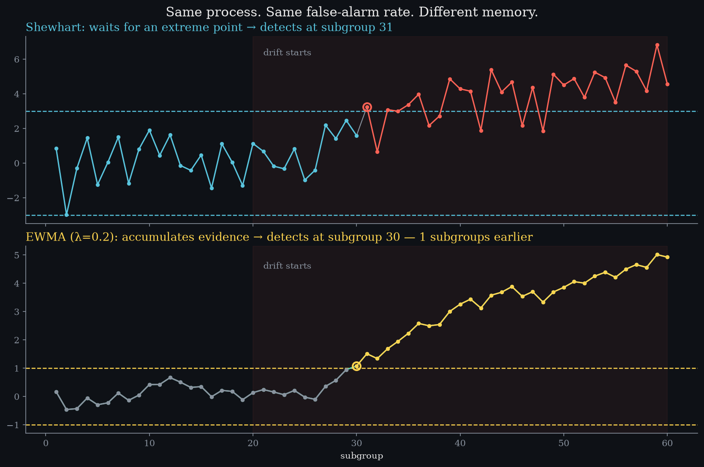
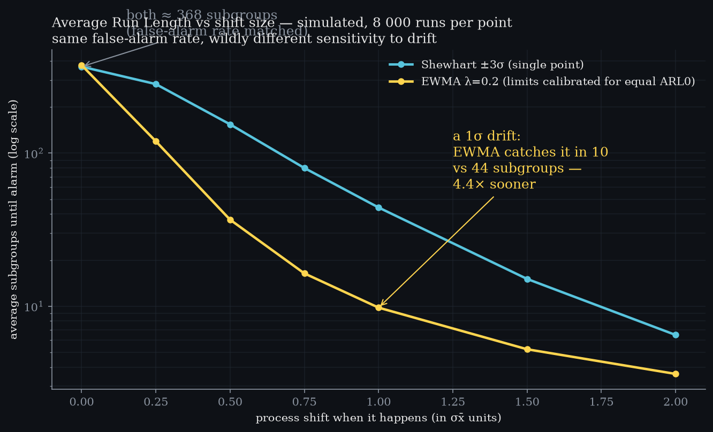
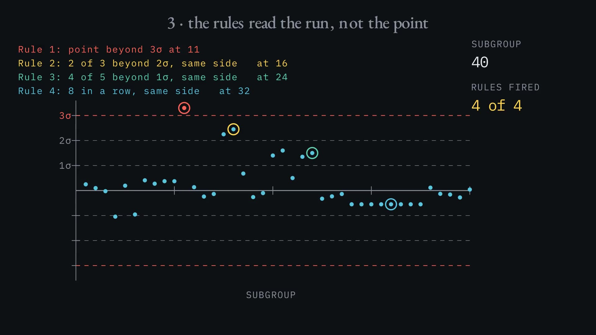
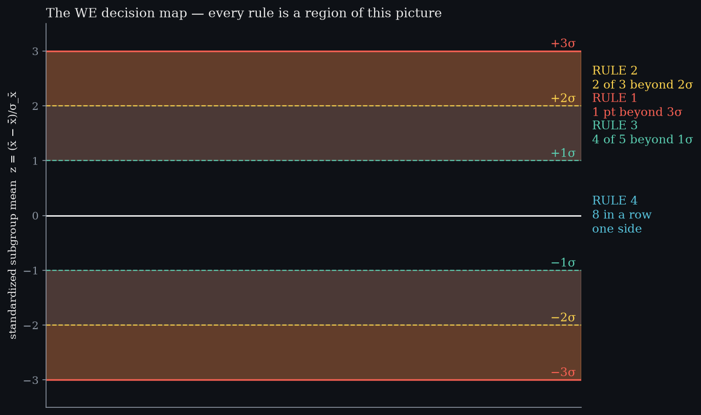

Level 9 · chapter nine
Detection theory: memory beats points
A chart with a memory catches drift while every raw point still looks innocent.
after Level 8 — capability·leads to Level 10 — counting, not measuring, not yet written
- 9.1The most expensive failure modeevery single measurement of a drift looks acceptable
- 9.2A chart with no memory43 subgroups late, and 2.6 sigma of movement
- 9.3A statistic that remembersone part new, four parts memory, same alarm budget
- 9.4The same eighty subgroups againcaught at 34, with the mean only 0.8 sigma off
- 9.5One drift is an anecdote44 subgroups against 10, and what the trade means
- 9.6Rules that read the runfour rules that judge the series, not the point
The most expensive failure mode
Slow drift is the most expensive failure mode in manufacturing, because every single measurement of it looks acceptable. the setupfalse alarm budget1 in 370drift rate0.06 σ / subgroupHere is a Shewhart chart with limits at ±3σ, which buys one false alarm in 370 subgroups.
The first twenty subgroups are noise around the target. Then the mean starts walking at 0.06 sigma per subgroup — slow enough that no single measurement looks wrong, and the chart carries on saying nothing.
A chart with no memory
The first violation lands at subgroup 64. what it costdrift startssubgroup 20first alarmsubgroup 64mean moved by then2.6 σThat is 43 subgroups after the drift began, by which time the mean has moved 2.6 sigma and every part in between was made by a process nobody knew had changed.
Each point was judged on its own and then forgotten. spoken · 1:12“Each point was judged on its own and then forgotten. That is the whole weakness.”That is the whole weakness, and it is not a tuning problem: the chart has no memory.
A statistic that remembers
Same process, same data, same false-alarm budget — and a statistic that remembers. how much it keepslambda0.20weighting1 new : 4 memoryEach new subgroup gets a fifth of the weight and the running statistic keeps the rest: with lambda at 0.2 that is one part new and four parts memory.
Its limits are not ±3. They are calibrated by simulation until this chart cries wolf exactly as rarely as the last one — one alarm in 370 quiet subgroups against 370, so the comparison that follows is fair.
The same eighty subgroups again
While the process is quiet the statistic wanders near zero, because new noise keeps cancelling old noise. caught earlycrosses atsubgroup 34mean off by0.8 σraw point there+2.48 σOnce the drift starts the noise still cancels but the drift does not: it is the same direction every time, so it adds up.
It crosses the limit at subgroup 34, with the mean only 0.8 sigma off and the raw measurement sitting at +2.48 sigma — a number no Shewhart chart would look at twice. The other chart waited until subgroup 64, thirty subgroups later.

One drift is an anecdote
That is one drift. thousands of driftsShewhart ARL44EWMA ARL10speed-up4.4×Run thousands of them and the average wait to detect a one sigma shift comes out at 44 subgroups for the Shewhart rule and 10 for this one. Divide them: 4.4 times sooner, bought with no extra false alarms at all.
That trade — sensitivity bought without paying in false alarms — is the whole of detection theory.spoken · 3:41“4.4 times sooner, bought with no extra false alarms at all.”

Rules that read the run
A limit is not the only evidence on a chart. beyond one pointrules4what they readthe runFour more rules read the run rather than the point — two of three beyond 2σ, four of five beyond 1σ, eight in a row on one side of centre — and each of them catches a pattern that no single point would fail.
Every rule you add buys sensitivity and pays in false alarms, and the arithmetic of that trade is Level 7's subject rather than this one's.

play
